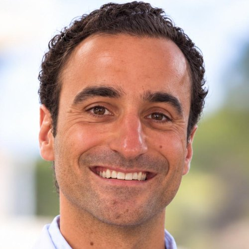
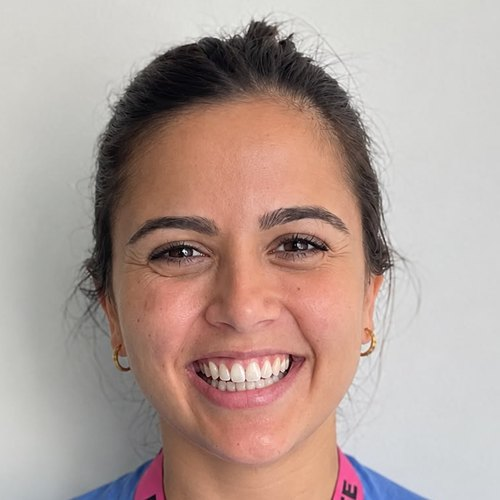
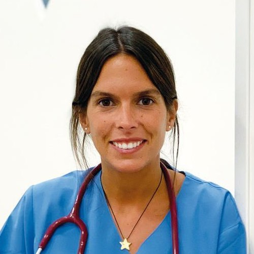

El equipo
Quién responde tus consultas
En Hera no contestan robots: cada duda la lee y la responde una de estas tres profesionales sanitarias, con nombre y apellido.

Dr. Gonzalo Nozaleda Pastor
Especialista en Ginecología y Obstetricia
Gonzalo es ginecólogo, formado en el Hospital Gregorio Marañón de Madrid, donde desarrolla su actividad profesional, que compagina con la práctica privada.
Durante el embarazo surgen muchas preguntas, y no siempre es fácil encontrar información clara y fiable. Hera nace para ayudarte a entender los cambios de cada etapa y acercarte el conocimiento médico de una forma sencilla y cercana.
Su objetivo es que te sientas informada y acompañada, con un espacio donde comprender mejor tu embarazo y resolver tus dudas con confianza.
Formación y trayectoria
- Especialista en Ginecología y Obstetricia · Hospital Gregorio Marañón (Madrid)
- Actividad en el Hospital Gregorio Marañón y en consulta privada
En Hera te puede ayudar con

Marina Fernández
Matrona y asesora de lactancia materna
Marina acompaña a mujeres y familias en las diferentes etapas de la vida, ofreciendo un cuidado cercano e individualizado, adaptado a las necesidades de cada momento.
Cómo te acompaña
- Ciclo menstrual
- Asesoramiento y resolución de dudas.
- Consulta preconcepcional
- Orientación y acompañamiento en la búsqueda del embarazo.
- Embarazo
- Información, acompañamiento y resolución de dudas.
- Preparación al parto
- Herramientas y recursos para afrontar el nacimiento con confianza y tranquilidad.
- Posparto
- Orientación y apoyo durante la adaptación a esta nueva etapa.
- Suelo pélvico
- Lactancia materna, diferida, mixta y artificial
- Asesoramiento individualizado, respetando las necesidades de cada madre y bebé. Valora el agarre y acompaña en la resolución de dificultades como el dolor, las grietas, la subida de la leche y la extracción y conservación de leche.
- «Existen tantas lactancias como madres»
- Aceites esenciales
- Orientación sobre su uso y las precauciones necesarias durante el embarazo y el parto.
Su forma de entender el acompañamiento parte de una idea fundamental: cada mujer, cada bebé y cada experiencia son únicos. Por eso, escucha sin juzgar, respeta las decisiones de cada familia y ofrece herramientas para que cada mujer encuentre su propio camino, sintiéndose acompañada, segura y comprendida en cada etapa.
Formación
- Grado en Enfermería · Universidad de Navarra (Pamplona)
- Especialidad de Matrona · King’s College London (Londres)
- Experto universitario en consultoría y asesoramiento en lactancia materna
- Máster en Formación Permanente en Atención Especializada durante el embarazo para matronas
- Curso de anquiloglosia y lactancia
- KCH Hypnobirthing · Hipnoparto
- Curso de técnicas de rebozo en gestación, parto y posparto
- Curso Método AIPAP Agua

Dra. Lucía Carrascón
Especialista en Pediatría
Lucía es pediatra y licenciada en Medicina por la Universidad de Navarra. Realizó su especialización en el Hospital Gregorio Marañón de Madrid, con calificación de excelente, y completó su formación en el UPMC Children’s Hospital of Pittsburgh, en Estados Unidos.
Su experiencia abarca la atención en Urgencias, Endocrinología Infantil y Hospitalización Pediátrica del Hospital Gregorio Marañón.
Con la llegada de un bebé aparecen nuevas preguntas. Su objetivo es acompañarte desde esos primeros días, ayudarte a comprender el desarrollo de tu bebé y ofrecerte información clara sobre su alimentación, crecimiento y cuidados, para que puedas vivir esta etapa con mayor confianza.
Formación y trayectoria
- Licenciatura en Medicina · Universidad de Navarra
- Especialidad en Pediatría · Hospital Gregorio Marañón (Madrid), con calificación de excelente
- Formación complementaria · UPMC Children’s Hospital of Pittsburgh (Estados Unidos)
- Urgencias, Endocrinología Infantil y Hospitalización Pediátrica · Hospital Gregorio Marañón
En Hera te puede ayudar con
¿Qué te preocupa hoy?
Pregúntalo y te responde una de ellas en menos de 48 h. Tus dos primeras consultas, gratis.
Pregunta tu duda gratis